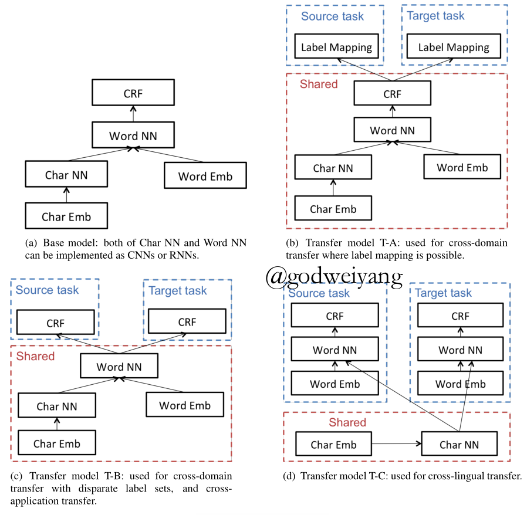
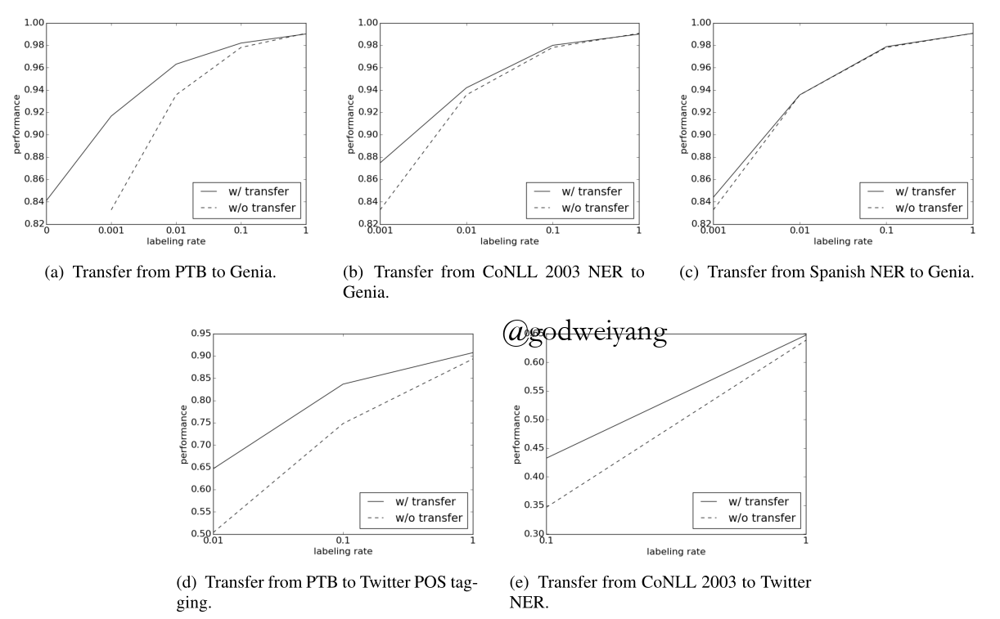
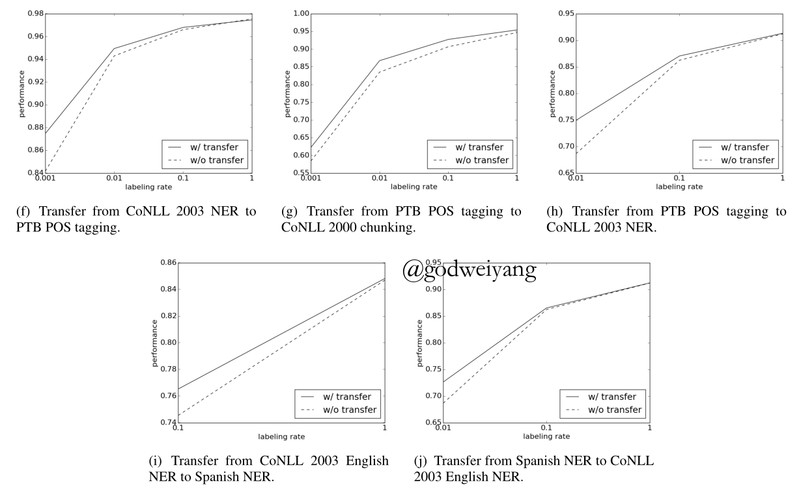
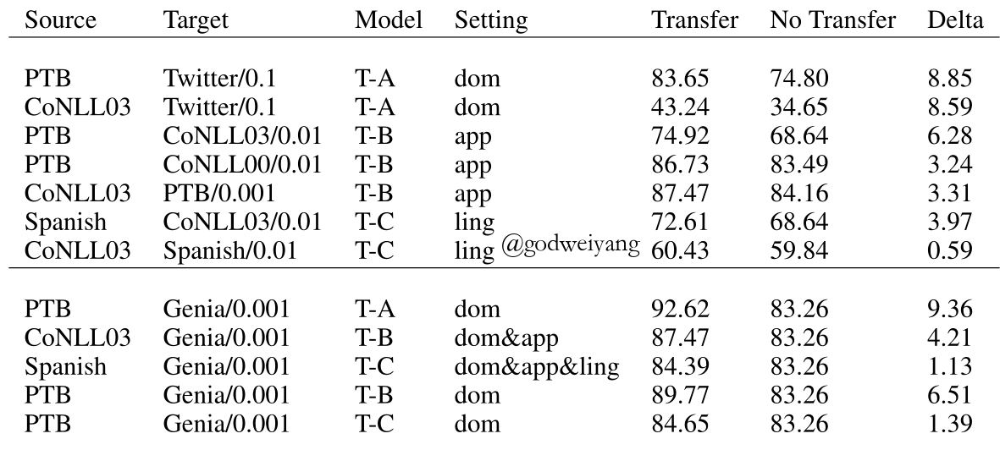
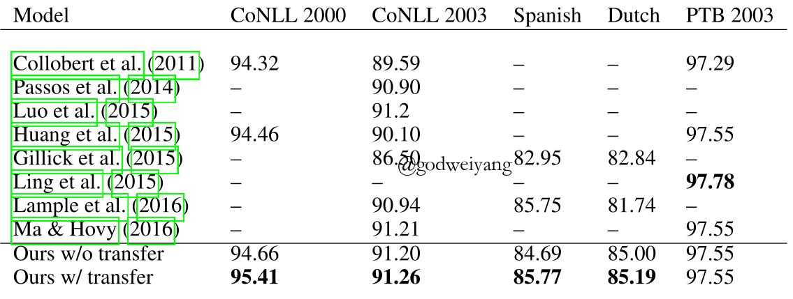

论文链接：链接
摘要
探索一种神经序列标注的迁移学习方法，适用于源任务有大量标注标签，但是目标任务标注标签很少的情况，主要有三个方面：跨领域、跨应用、跨语言。
1 介绍
序列标注任务的一个难点就是怎样将知识从一个任务迁移到另一个任务上面去，通常被叫做“迁移学习”。
这里对三种任务（跨领域、跨应用、跨语言）分别提出了参数共享的神经网络结构，实验结果也很好。即使标注标签很多，结果也比以前的结果更好。
2 相关工作
NLP迁移学习通常有两种方法，一种是基于资源的迁移，另一种是基于模型的迁移。
基于资源的迁移需要大量的跨语言语料，而且通常只用在跨语言任务了，在跨领域和跨应用方面还没什么应用。
基于模型的迁移就不需要大量的额外资源了，只要探索源任务和目标任务之间的相似性和相关性，通过修改模型结构、训练算法、特征表示。
这里的模型就是基于模型的迁移。和以往不同的是，这个模型利用了深度递归神经网之间的一般性，可以在跨领域、跨应用、跨语言之间转换。
3 方法

上图分别是基本模型、跨领域模型、跨应用模型、跨语言模型。
3.1 基本模型
首先字符层输入每个字符表示，输出单词的字符层表示，然后和词向量结合作为每个词的表示，然后经过一个CNN或者RNN，隐含层输出再经过一个CRF得到每个词的标签。
3.2 迁移学习结构
跨领域、跨应用、跨语言每种一个迁移结构，和基本模型不同的是，共享的参数不同。
3.2.1 跨领域迁移
跨领域迁移有两种情况，一种是两个领域标签存在映射关系，一种是不存在映射关系。
第一种情况结构如图b所示，可以共享CRF层以及下面的所有层，最后加一个标签映射的步骤就行了
第二种情况结构如图c所示，CRF层独立训练。
3.2.2 跨应用迁移
这里假设两种应用是同一种语言，所以和跨领域标签无映射关系类似，用的是图c的结构。
3.2.3 跨语言迁移
这里重点放在两种字母表相同的语言上，比如英语和西班牙语。
由于字符相同，所以采用图d结构，共享字符层和词向量。
3.3 训练
假设从任务$s$迁移到任务$t$，训练集分为$X_s$和$X_t$，参数分为$W_s$和$W_t$。其中模型参数还分为任务特定参数和共享参数：
\[{W_s} = {W_{s,spec}} \cup {W_{shared}},{W_t} = {W_{t,spec}} \cup {W_{shared}}\]训练过程如下：
每一次迭代，都采用二项分布随机抽取一个任务$s$或$t$，然后训练该任务特定模型参数和共享参数。由于源任务和目标任务收敛速度不一定一样，所以对目标任务提前停止。
3.4 模型实现
RNN采用GRU，假设隐含层输出为$h$，输出标签为$y$，定义CRF的目标函数为
\[f(h,y) - \log \sum\limits_{y’ \in \gamma (h)} {\exp (f(h,y’) + \cos {\rm{t}}(y,y’))} \]
4 实验


上图是实验结果，其中跨领域迁移：ade，跨应用迁移：fgh，跨语言迁移：ij，跨领域和应用：b，跨领域、应用和语言：c。

上表是各类任务在不同标签率下迁移学习和无迁移学习的性能对比。
可以看出三种迁移结构性能提升的顺序是A>B>C，因为结构C比如跨语言模型，源任务和目标任务相似性很小。

上图是和其他模型比较的结果。
5 结论
提出一种神经序列标注的迁移学习方法，主要有三个方面：跨领域、跨应用、跨语言。
以下三个因素对迁移学习性能有很大影响：目标任务标签数量、源任务和目标任务相关性、能够共享的参数数量。
在以后的工作中，可以在跨语言迁移学习中尝试结合基于模型的迁移和基于资源的迁移。